|
.
| Perfect
Dark Version Beta : Armes |
DY357-LX
|
| Perfect
Dark Version Beta : Armes |

Au début, Trent Easton (qui se trouvait dans le Niveau Datadyne 1 - Defection en tant que Garde) portait un Cougar Magnum et non un DY357-LX comme plus tard. La Photo est un peu floue je vous l'accorde, mais on lit bien "Picked up a Cougar Magnum". |
K7 Avenger

Avant qu'il ne change de nom, le K7 Avenger s'appelait simplemment "Avenger". On le voit sur cette Photo ecrit au dessus de la Mention "Threat Detector" ! |
ZMG 9mm
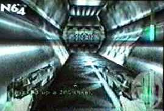
Une Arme de Goldeneye, dont le Nom fut changée (ZZT pour etre exact). Sur la photo de gauche, on lit "Picked up a ZMG 9mm", quant à la photo de droite, c'est un ZMG qui est sur le sol devant Joanna. La forme est reconnaissable, comme un T. |
Tranquiliseur
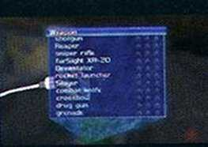
Là je fais confiance à Subdrag ! Il y a sur cette photo 11 noms d'armes. La 10ème est censée se prénommer "Drug Gun", qui deviendra plus tard le fameux - et jouissif - Tranquiliseur ! En 8ème position, on voit aussi les Couteaux de Lancer (Throwing Knives) qui deviendront les Couteaux de Combat (Combat Knives). Peut-etre qu'il y avait 2 sortes de Couteaux, et que le Systeme de Double Fonction les a réunis. |
Arbalete

Ici, la 1ère Fonction est DRUG, et non SEDATE (Version US evidemment ). |
Dragon
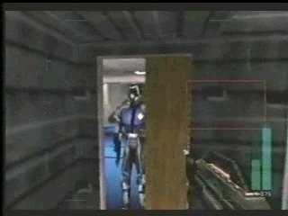 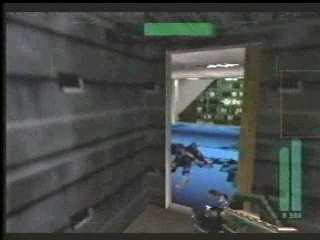
Avant, on commencait le Niveau avec un Dragon au lieu du Falcon 2. Le Dragon avait une Fonction "Lock-On" comme le CMP 150 (voir le Carré Rouge sur les 2 Photos, suremment l'Hélico - qu'est-ce qu'il fout là dans le premier Niveau ?!?), et aussi une Visée à la Farsight XR-20 ! Trop puissant ? Un peu trop, oui ! |
AR34

Deux AR34 !! En plus la photo est de TRES Bonne qualité. Oui donc en fait, je pense que Rare a enlevé cette Possibilté tout simplement parce qu'un AR34, çà se porte à 2 Mains !! Un peu comme les RCP-90 et AR33 de Goldeneye. |
Slayer
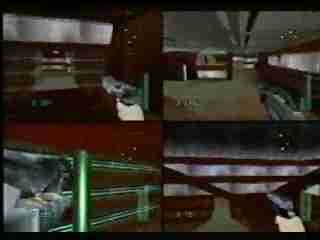
Sur ces 2 Photos, le Joueur en bas à Gauche porte le Slayer au dessus de son Epaule. Rare a du modifier cette idée car la majorité des Joueurs sont Droitiers, comme Joanna dans la plupart des Photos ou elle apparait. |
Remote Mine
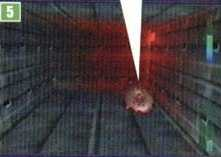
Avant les Mines avaient la meme alure que celles de Goldeneye, comme le montre
la Photo.
Farsight
Le Farsight a souvent changé. Au Début, le viseur était normal (Croix Verte). Apres, lorsque l'on avait une cible, un Carré Rouge (à la Cmp150) entourait le malheureux, et enfin, on pouvait "Locker" sa cible en appuyant sur C-Droite pendant qu'on visait !! |
Ancien Lance-Roquettes
Désolé,
mais là je fais comme vous et je regarde. Il faut un Action Replay
ou un Gameshark, et rentrer ces Codes trouvés par Wreck dans le
Temple. Certaines de ces armes sont l'ancien Lance-Roquettes. |
801DC62C
0034
801DC7E4 0034
801DC99C 0034
801DCB54 0034
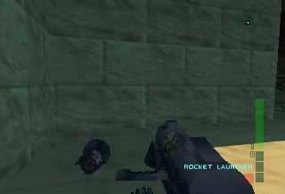 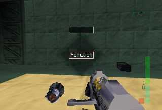 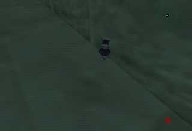
Comme on peut le voir sur les 4 Photos, l'aspect n'est sensiblemment pas le meme. Voici le Texte original de ces Codes : "Les Roquettes se deplacent sans exploser et finissent par tomber au sol. On peut meme les ramasser et les re-tirer." |
Maniere de Tenir les Armes
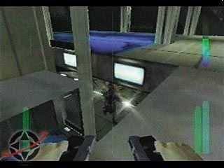 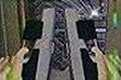

Armes de Goldeneye
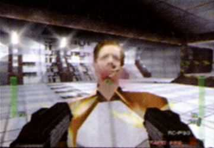 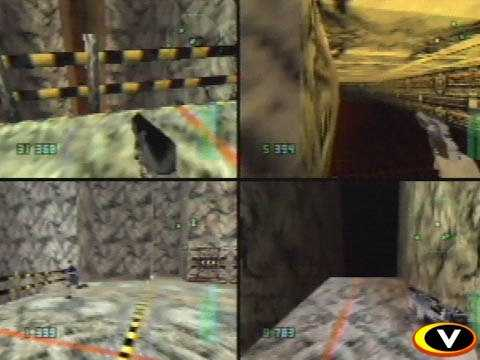
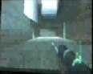 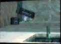 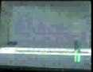
Les anciennes Armes de Goldeneye sont toujours présentes, mais on ne peut pas avoir 2 RCP-90. Sur la photo en Haut à Droite, le Joueur en Haut à Droite tient un ANCIEN Cougar Magnum, meme si c'est difficile à voir. Il y a aussi l'ancien Sniper, beaucoup plus sobre, sur les 3 Dernieres Photos de mauvaise qualité. Les Noms des Armes de Goldeneye ont été changés car Rare n'a plus le Copyright. Ainsi, Facility = Felicity, Klobb = Klo1313 (13 = B !). |